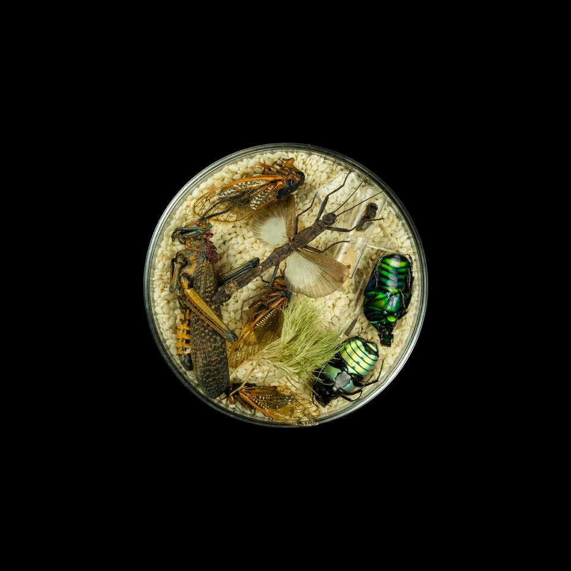
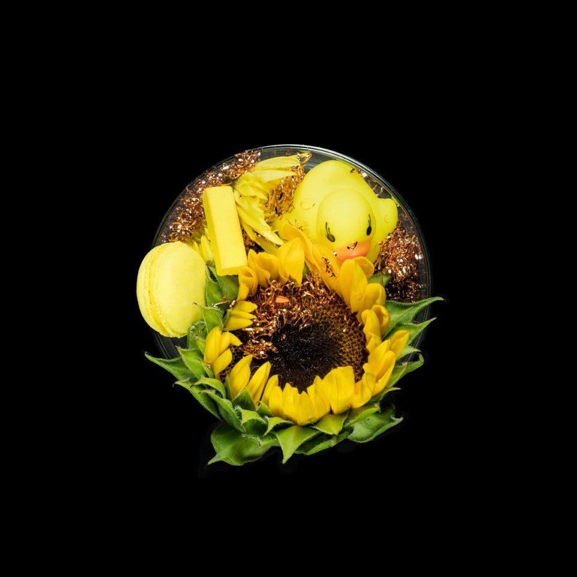
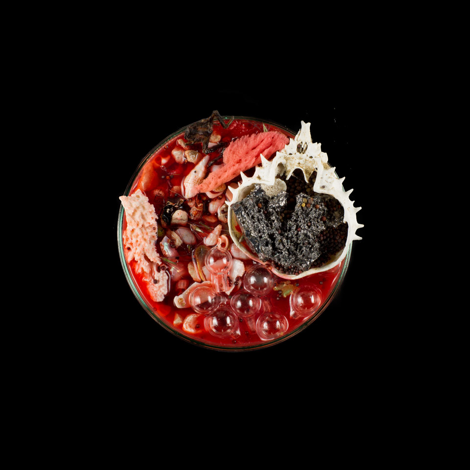
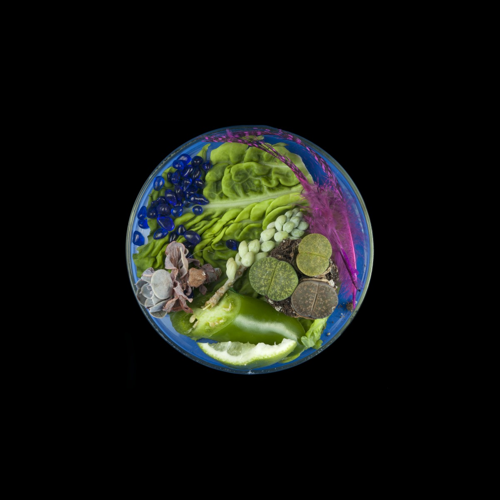
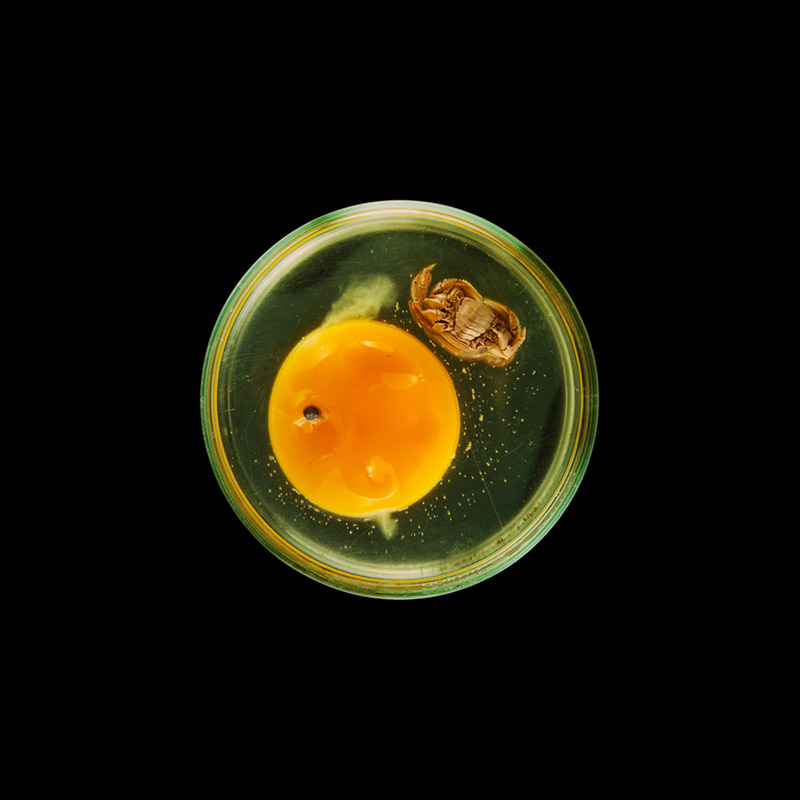

“Heart of Flower” is an interactive installation that changes the state and beat of the heart by pressing the petals, and the flower part will also sway naturally. Each sway of the flower expresses its own emotion, but it will stop when someone touches it.
The sound and light installation uses 2,500 litres of self-cleaning recycled water, controlled by a system of 3D tracking cameras placed around the ceiling, which detects the movement of visitors and sends out groups of signals from the water nozzles on the ceiling, stopping the flow of water within a radius of around six feet around the person, allowing the visitor to walk through the downpour without getting wet, and to become a "performer at the intersection of art, technology and nature".
The impact of a single cigarette butt on the environment and water is demonstrated in real time through a complex plumbing system. This algorithm-driven pumping system calculates the number of visitors to the venue, their likelihood of smoking, and the level of pollution they will create.
The title of the series, Vanitas, is taken from a genre of 17th-century Dutch still life painting that often juxtaposed symbols of life and decay. Miniature landscapes are created using circular shallow glass containers from the laboratory, and the flatness of photography is used to display these fascinating, miniature environments, which are composed primarily of naturally occurring materials, but sometimes also man-made substances.
    Using the form of "leaf and tongue" for figurative expression, linking the relationship between man and nature, reflecting the flow of plant life, and attempting to let mankind gain the ability to empathise with plants; and then using the light source to carry out the mimetic interaction of forced photosynthesis, which embodies man's enslavement of the plant, and the use of repetitive mechanical action to externalise this enslavement, until the final disappearance of the "leaf", and contrasted with the existence of the "tongue".
Washed Ashore is a project of the Altura Institute for Art and Environmental Education in the United States, where volunteers collect marine debris on the southern Oregon coast and then build them into giant sculptures.
Created using LIDAR scanning, an unmanned aerial vehicle and a bespoke 360° camera, this work records the sounds of Grisedale Forest in the north of England as a binaural soundscape, rediscovering the forest through the eyes of the animals, an immersive animal forest adventure.
The entire installation space changes gradually with the seasons, created by a computer programme that continuously renders the work in real time; flowers germinate, grow and bloom before their petals begin to wilt and eventually disappear, and the cycle of growth and decay repeats itself in perpetuity. Human interaction with the space causes the work to continually change: if a person stands still, the flowers around them grow and bloom; if a viewer touches or steps on the flowers, they shed their petals, then wilt and finally die, the previous visual state never being replicated and never happening again.
Echoing the work at the beginning of the exhibition, The Heart of Flower, this time the visitor is no longer on the sidelines, but participates in the transformation of the flower. Although the line between nature and humans is unclear, a healthy ecosystem is not one in which nature and humans are in conflict, but one that includes people. In the past, humans understood that they could not fully master nature or control it, but as human life becomes closer to the rules of nature and natural environments become more comfortable for humans, it becomes more possible to explore a form of human intervention where nature has no control.